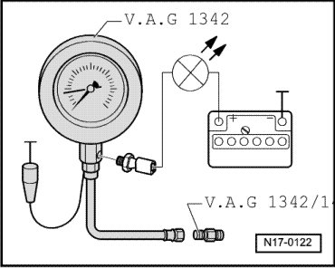

Oil Temperature Sensor/Switch: Testing and Inspection
Oil Pressure and Oil Pressure Switch, Checking
--> [ Oil Pressure Switch, Checking ]
--> [ Oil Pressure, Checking ]
Special tools, testers and auxiliary items required
• Oil pressure gauge (V.A.G 1342)
• Adapter (V.A.G 1342/14)
• Voltage tester (V.A.G 1527B)
• Connector test set (V.A.G 1594C)
• Wiring diagram
• Function test and servicing the optical and acoustic oil pressure indicator:
Oil Pressure Switch, Checking
Test Conditions
• Engine oil level OK, checking --> [ Oil Dipstick Markings ] Description and Operation.
• Engine oil temperature at least 80° C (radiator fan must have run once)
• For vehicles with automatic transmission, selector lever must be in position "P" or "N".
Procedure
- Remove oil pressure switch (F1) --> [ (Item 6) , 20 Nm ] Service and Repair and screw in oil pressure gauge.

- Screw oil pressure gauge (V.A.G 1342) with adapter (V.A.G 1342/14) into oil filter bracket in place of oil pressure switch --> [ (Item 6) , 20 Nm ] Service and Repair.
• Observe installation position of adapter (V.A.G 1342/14): The conical connection of the adapter is threaded in with the pressure hose of the oil pressure gauge (V.A.G 1342).
- Connect brown wire of oil pressure gauge (V.A.G 1342) to ground (-).
- Connect voltage tester (V.A.G 1527B) using adapter cables from connector test set (V.A.G 1594C) to battery B+ and oil pressure switch (F1). LED must not light up.
If the LED lights up:
- Replace the oil pressure switch (F1) --> [ (Item 6) , 20 Nm ] Service and Repair.
If the LED does not light up:
- Start the engine and run at idle speed.
LED must light up at 1.2 to 1.6 bar positive pressure, otherwise replace oil pressure switch (F1) --> [ (Item 6) , 20 Nm ] Service and Repair.
Oil Pressure, Checking
Test Conditions
• Engine oil level OK, checking --> [ Oil Dipstick Markings ] Description and Operation.
• Engine oil temperature at least 80° C (radiator fan must have run once)
• For vehicles with automatic transmission, selector lever must be in position "P" or "N".
Procedure
- Check oil pressure at different speeds:
• 1500 RPM: at least 1.7 bar
• 2000 RPM: 3.0 to 5.5 bar pressure
• Above 2000 RPM: maximum 7.0 bar
If the specified values are not reached:
- Examine the filter intake for contamination.
- Examine the pressure pipe between oil pump and cylinder block for tightness.
• Check for mechanical damage, e.g. bearing failures that can cause low oil pressure.
If a malfunction is found despite insufficient oil pressure:
- Replace the oil pump --> [ Oil Pump, Assembly Overview ] Service and Repair.
The oil pressure must not exceed 7.0 bar.
If 7.0 bar is exceeded:
- Check oil channels.
Possibly the oil pressure relief valve in the oil pump is plugged.
- Replace oil pump.